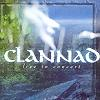

Celtic Lyrics Corner > Artists & Groups > Clannad > Live In Concert > Robin Of Sherwood Medley
|  | Robin Of Sherwood Medley |
| Credits : |
a) Robin (The Hooded Man) - Ciarán Brennan
b) Herne - Pól Brennan c) Ancient Forest - Ciarán Brennan, Pól Brennan & Máire Brennan d) Lady Marian - Ciarán Brennan e) Royal - Pól Brennan f) Action - J.Delany g) Mighty Chase - Ciarán Brennan |
| Appears On : | Live In Concert |
| Language : | English |
Lyrics :
Robin, the hooded man
Robin, the hooded man
Robin, the hooded man
I'll find the way
Night and day
I am the hunter
The hunter
Twenty years
Of waiting here
I am the hunter
The hunter
Came upon on an ancient forest
A guided path that led me there
Walking through the mystic forest
The legend, tale of times gone by
Voices whisper in the black night
Reflections of the times gone by
A floating mist that circles shadows
A legend, tale of times gone by
Giant trees so full remind me
Of many years and ages past
Will they ever know the answer
Of legend, tales, and times gone by?